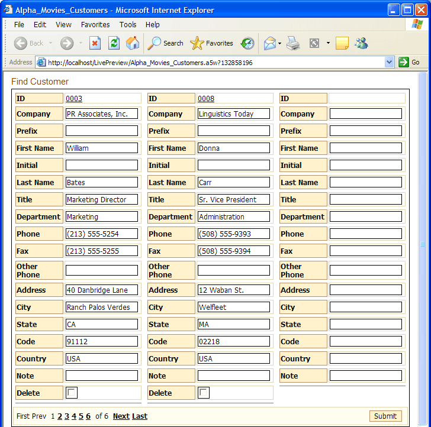
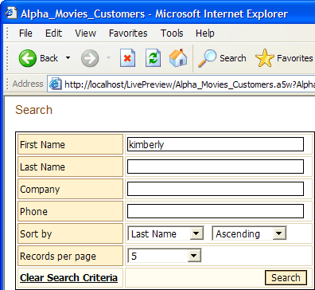
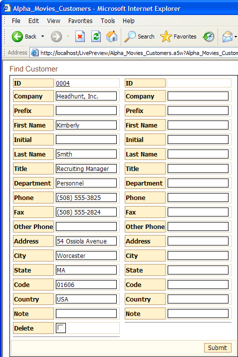

<img src="/a5/Button_Images/Previous_Topic_Button.gif" x-maintain-ratio=TRUE style="border: none; width: 22px; height: 22px; float: none; border-style: none; border-style: none;" width=22 height=22 border=0> <img src="/a5/Button_Images/Next_Topic_Button.gif" x-maintain-ratio=TRUE style="border: none; width: 22px; height: 22px; float: none; border-style: none; border-style: none;" width=22 height=22 border=0>
Publishing AlphaMovies
 Note : The Publishing AlphaMovies topic describes a technique available to Alpha Five database users.
Note : The Publishing AlphaMovies topic describes a technique available to Alpha Five database users.
Although AlphaMovies has several tables and a set, the following example shows how easy it is to take one of them and publish it for use over the Internet.
 Note : You should have already created the AlphaMovies database in the Creating a Database lesson of Getting Started with Alpha Five.
Note : You should have already created the AlphaMovies database in the Creating a Database lesson of Getting Started with Alpha Five.
Display the Web Projects Control Panel.
Click New > OK. Select Grid and click OK to display the Component Type page of the Grid Builder.
Select "Columnar" from the Grid layout list.
Chick the Updateable radio button.
Check Grid contains a 'Search' part.
Display the Query (DBF) page.
Select "customers" from the Table name field.
Click
 to the right of the Order field.
to the right of the Order field.Select "Last_name" in the top list and "First_name" in the middle list. Click OK to continue.
Display the Fields page.
Select all the fields in the Available Fields list, with the exception of "
" and " " and click  to add them to the Selected Fields list.
to add them to the Selected Fields list.For each field in the Selected Fields list that has an underscore (_) in its name, change its Row Properties > Row Label (see picture below).

Display the Properties page.
Enter 3 into the Layout Options > Repeating Columns field. This means that the page will display three records horizontally.
Enter 2 into the Layout Options > Rows of Data field. This means that the screen will show two data records and a third blank record for adding new customers.
Select "Smaller" in the Layout Options > Font Size field. This reduces the default size of the type being used and reduces the size of the resulting screen.
Display the Update Settings page.
Enter 1 into the Permissions > Number of new record rows field.
Display the Search Fields page.
Select "First_Name", "Last_Name", "Company_Name", and "Phone_Number" and click
to add them to the Fields to Search In list.Display the Search Properties page.
Change the Search Options > Title when hidden field to "Find Customer".
Save the component as "Alpha_Movies_Customers".
Click Close to return to the Web Projects Control Panel.
Select the Web Components page, select the new Alpha_Movies_Customers component, and click
 Publish > Publish.
Publish > Publish.Click New > Alpha Five Web Page and click OK.
Select File > Save As and name the new page "Alpha_Movies_Customers".
Click
 Insert Component > Select. Pick the "Alpha_Movies_Customers" component and click OK > OK.
Insert Component > Select. Pick the "Alpha_Movies_Customers" component and click OK > OK.Insert the following text above the grid component: "Alpha Movies Customer List".
Select the new text and set it to the "Tahoma" font, size 3 (12 pt), and bold.
Click
 and Close.
and Close.Display the A5W Pages page.
Right click the "Alpha_Movies_Customers" page and select Publish (Local Webroot) and open. Your new page will display as you see it above.
Click Find Customer and the Search form appears.

Enter "Kimberly" (without the quotes) into the First Name field and click Search. You should see something like the following screen.

This is a fully functional window into the AlphaMovies database that will let the remote Internet user add, edit, or delete records. Of course, you can limit any of those capabilities, making it a view-only form if you wish.
See Also
<img src="/a5/Button_Images/Previous_Topic_Button.gif" x-maintain-ratio=TRUE style="border: none; width: 22px; height: 22px; float: none; border-style: none; border-style: none;" width=22 height=22 border=0> <img src="/a5/Button_Images/Next_Topic_Button.gif" x-maintain-ratio=TRUE style="border: none; width: 22px; height: 22px; float: none; border-style: none; border-style: none;" width=22 height=22 border=0>